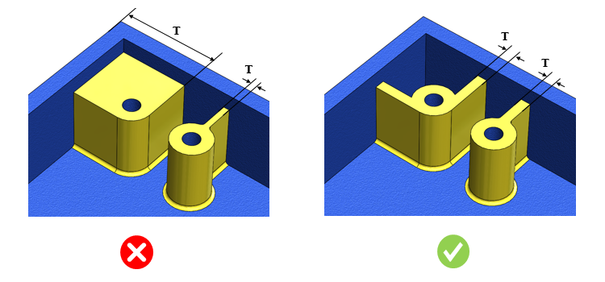

部品において、肉厚はユーザーが指定した範囲内である必要があります。
用途に応じて、部品の壁（肉厚）は特定の指定範囲内である必要があります。材料流動などのプロセスを用いて製造される部品では、肉厚が厚すぎたり薄すぎたりすると、製造上の問題が発生する可能性があります。他の製造プロセスにおいても、部品の壁が薄すぎる場合、製造中や使用中に破損しやすくなります。同様に、壁が厚すぎると部品重量が増加し、中空化（コア抜き）が必要になる場合があります。
このルールは、部品に肉厚が厚すぎる領域または薄すぎる領域が存在するかどうかをチェックするのに役立ちます。
部品の肉厚に対する要求は、その用途、製造プロセス、および使用される材料の種類に応じて異なります。
このルールは、部品内で許容される最小および最大肉厚を指定するように構成できます。
ルールUIでは、材料の一覧が マップ材料 から読み込まれ、ユーザーは材料およびその値を構成できるようになります。
材料とその値を構成した後、ユーザーは Ctrl+M コマンドを使用して、ルールUI内で材料グループおよびグレードとともに構成済み材料の一覧をフィルタ表示できます。同じキー（Ctrl+M）を使用してフィルタをリセットできます。

ここで、
T = 対象領域の肉厚